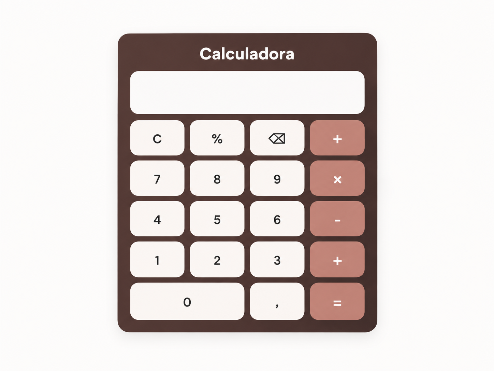

Dashboard de Marketing
Análise do comportamento de compra e do desempenho de campanhas.
Desenvolvimento Web | Banco de Dados | Análise de Dados
Aqui você pode conhecer meus projetos web, testar as aplicações e conferir o código no GitHub.
Curso Análise e Desenvolvimento de Sistemas (ADS) e desenvolvo projetos nas áreas de dados e desenvolvimento web. Estudo bancos de dados, SQL e Python e já desenvolvi dashboards de marketing, logística e finanças no Power BI. Complemento minha graduação com cursos concluídos em Power BI, Engenharia de Dados e Fundamentos de Data Science e Inteligência Artificial. No desenvolvimento web, uso HTML, CSS e JavaScript. Entre meus projetos estão um buscador de CEP que consulta uma API e uma lista de tarefas que salva os dados no navegador com LocalStorage. Uso Git e GitHub para versionar e compartilhar meus projetos.

Calculadora desenvolvida com HTML, CSS e JavaScript.
Análise do comportamento de compra e do desempenho de campanhas.

Análise de indicadores de operações logísticas.

Visualização e análise de indicadores financeiros.
Python
SQL
Power BI
HTML
CSS
JavaScript
GitHub
Estou aberta a oportunidades e conexões profissionais.
E-mail: chayeneabreu@outlook.com